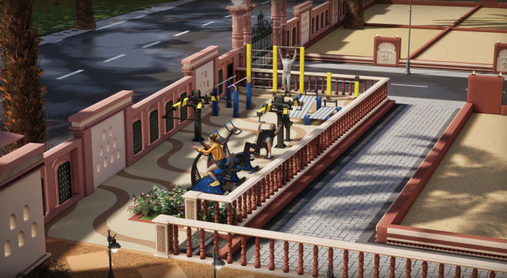
Garden 1
Balram Udyan
Depiction of Shri Ram's childhoodAn open air gym inspired by the boundless energy of child Ram, water fountains with grand statues of his childhood pastimes, and a feature wall.

Drushika Ayodhyapuram is a unique presentation by Drushika Group, where the pleasant dream of Ram Rajya takes shape alongside modernity. It is not just a residential plot scheme, but a pure and peaceful environment that connects with the soul.
Dedicated to Maryada Purushottam Lord Shri Ram, every corner of the colony tells the story of his ideals. The grand statues and facilities in the specially designed gardens are not only attractions, but living chapters of Shri Ram's life journey. A calm, theme-based setting gives you and your children a chance to see and learn the true values of life.
जहाँ हर दिन है एक उत्सव,
और हर हृदय में हैं राम!

An open air gym inspired by the boundless energy of child Ram, water fountains with grand statues of his childhood pastimes, and a feature wall.
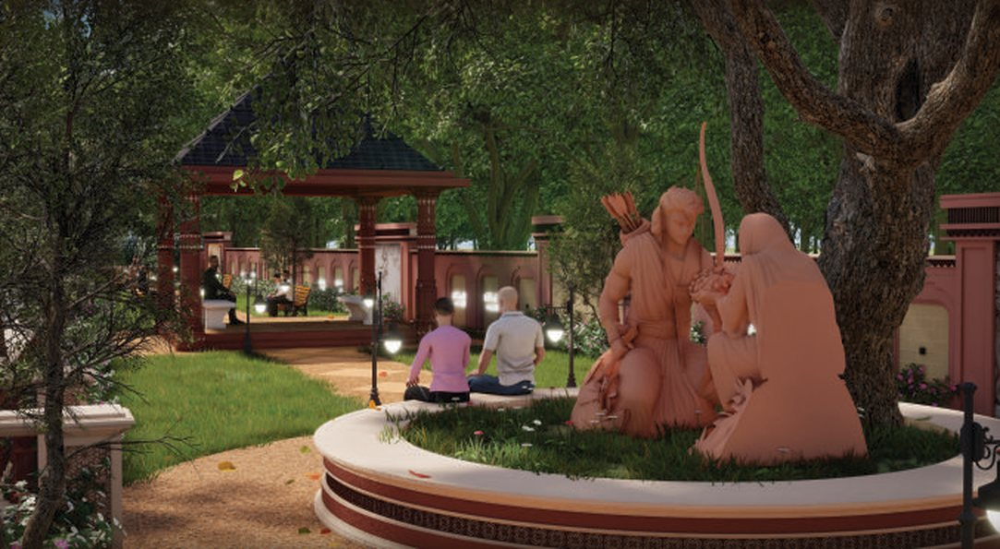
Seating under shady trees, the Panchvati sacred garden of five holy trees, and a peaceful gazebo to sit with loved ones.
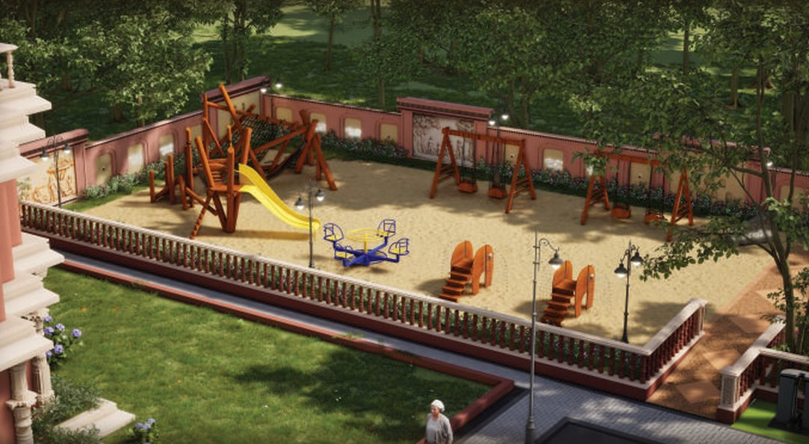
Safe cycle and vehicle stand, a kids play area with special wooden swings, an open air theatre and a plot boundary wall for each plot.
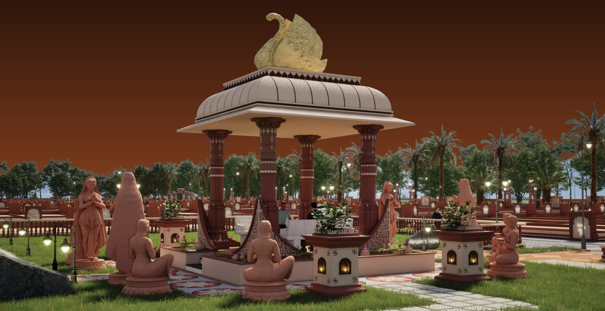
A Pushpak Viman inspired gazebo, a natural-stone acupressure pathway, and a velvety lawn with a lily pond (kamal kund) and statues.
Tap any picture to view it full screen. Images are artist impressions.
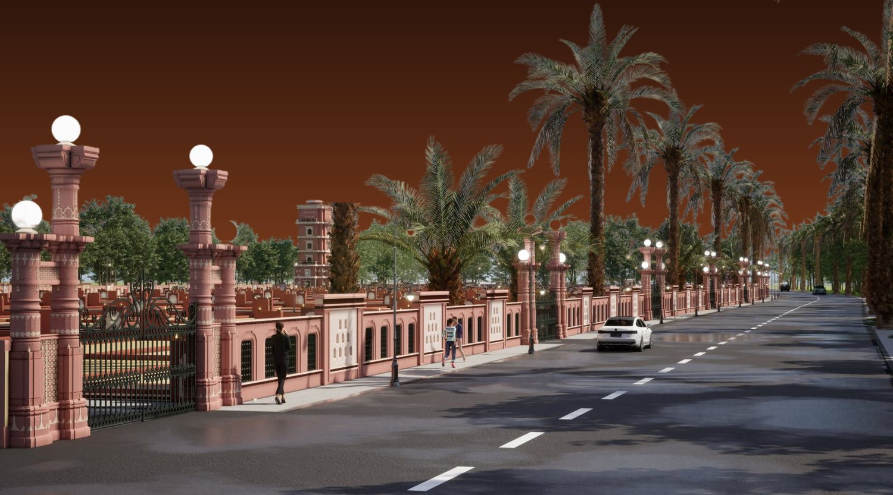
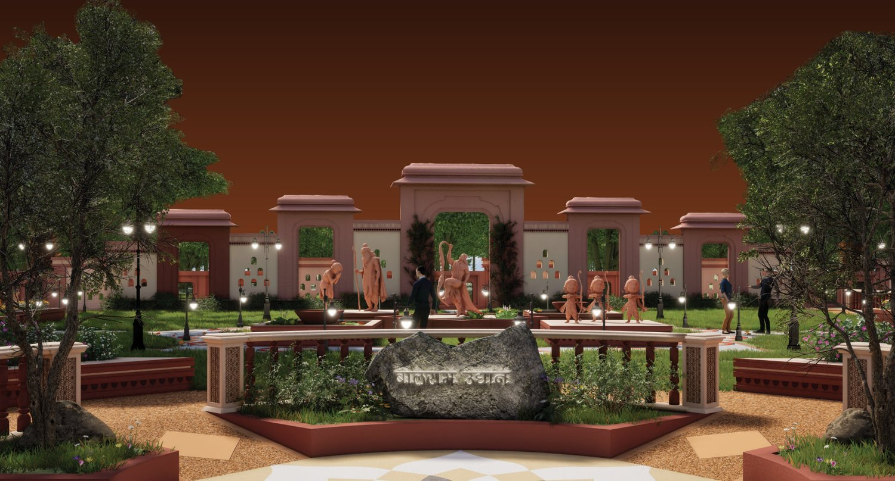
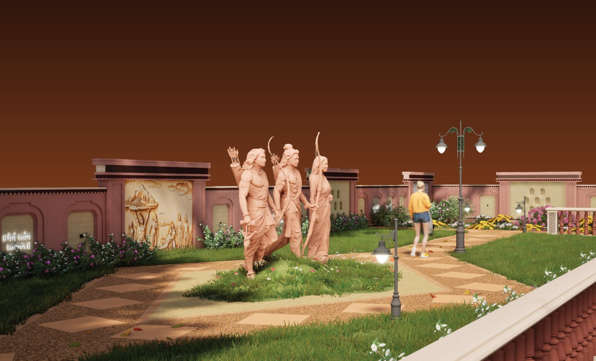
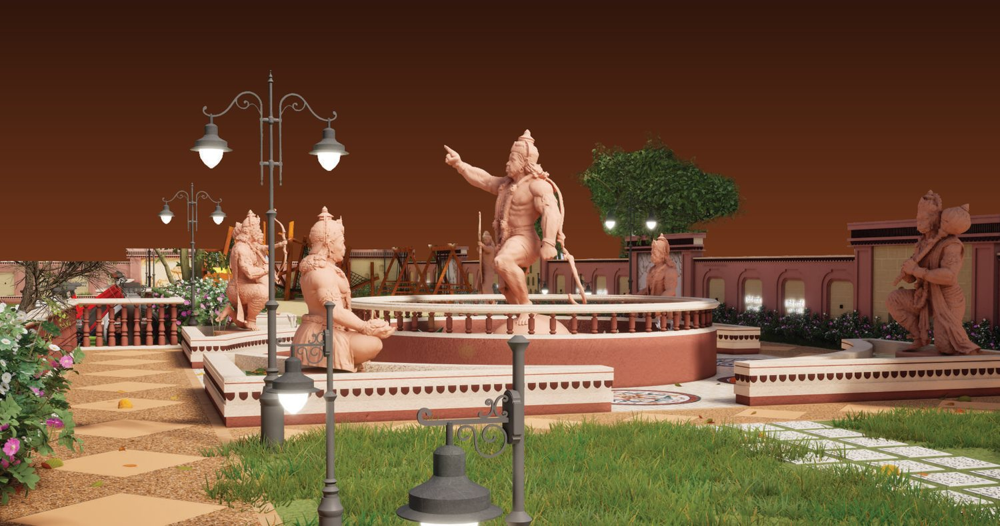
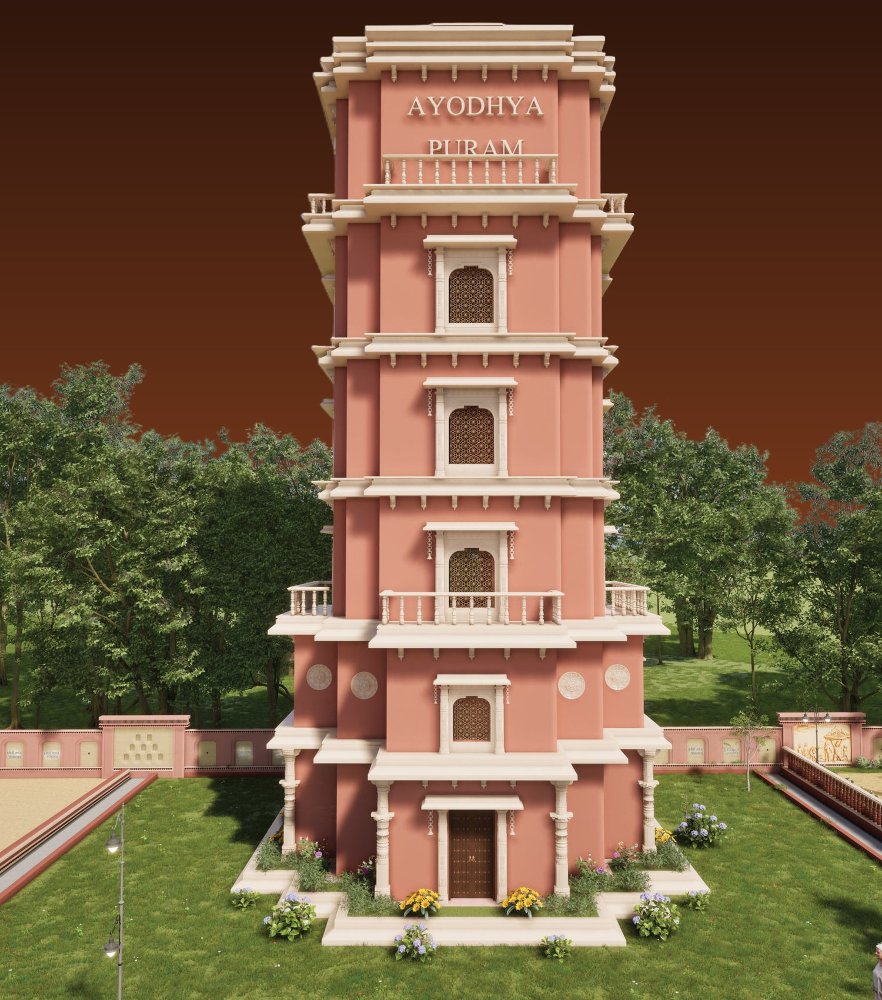
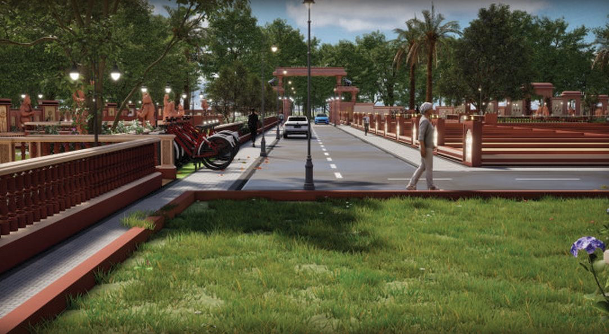
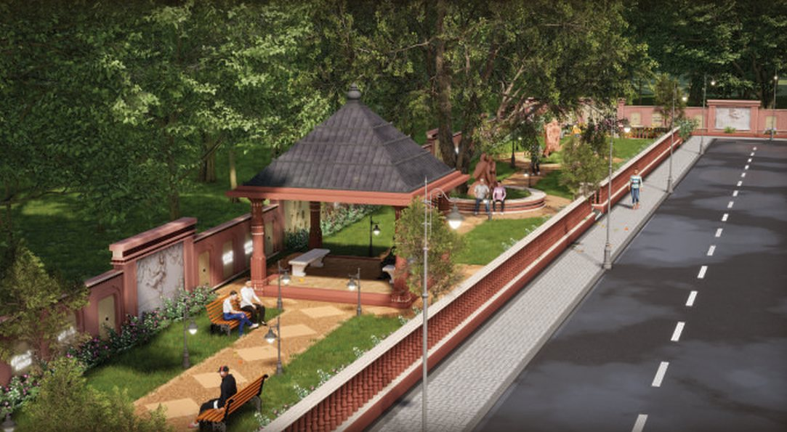
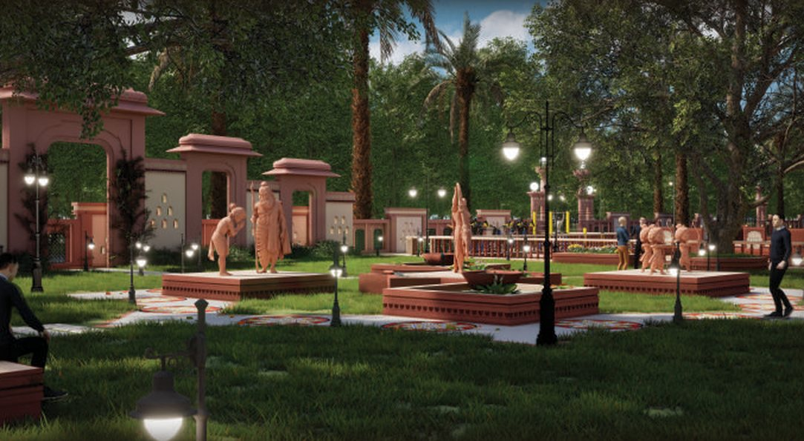
Layout shows the 18 m wide main road, 9 m internal roads, the four gardens, the service area and the water tank. Irregular plots are also marked. Sizes and layout are tentative.
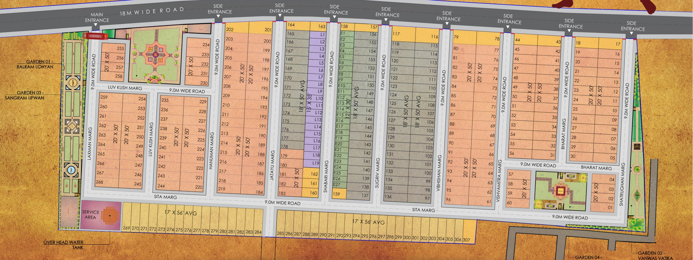
| (ft) | ||
|---|---|---|
| 20 × 50 | 1,000 | General plot |
| 18 × 50 avg. | 900 avg. | General plot |
| 17 × 56 avg. | 952 avg. | General plot |
| 15 × 35 | 525 | LIG plot |
| 12 × 30 | 360 | EWS plot |
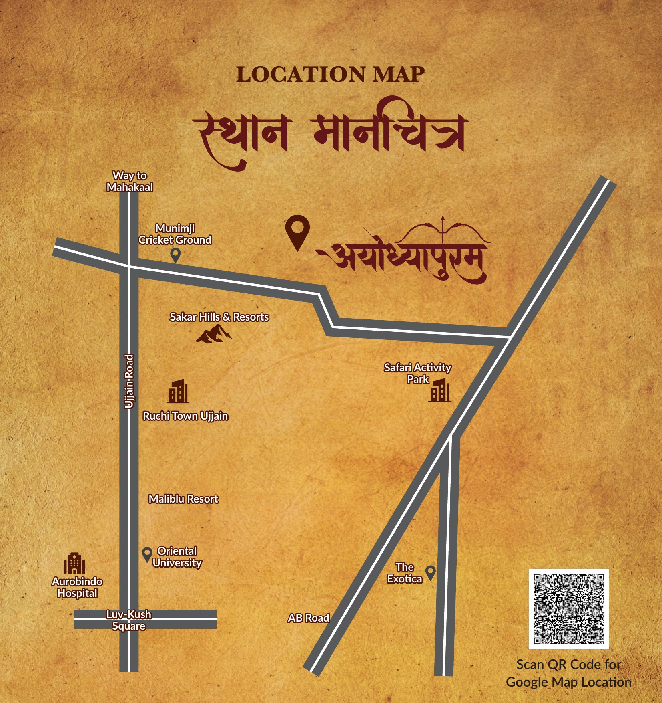